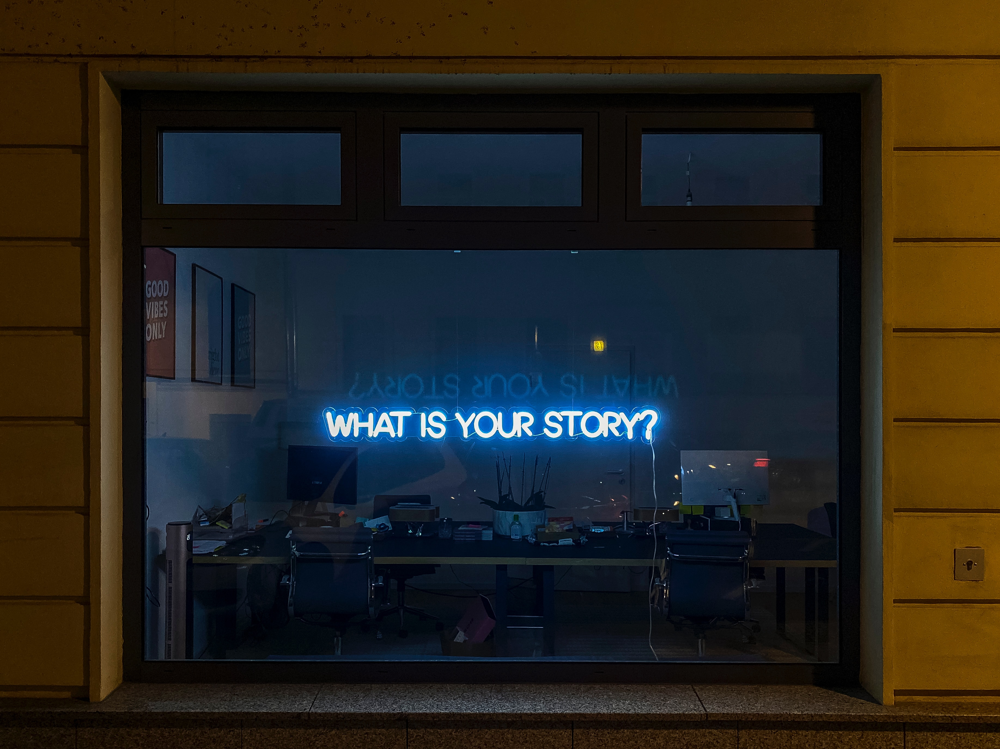
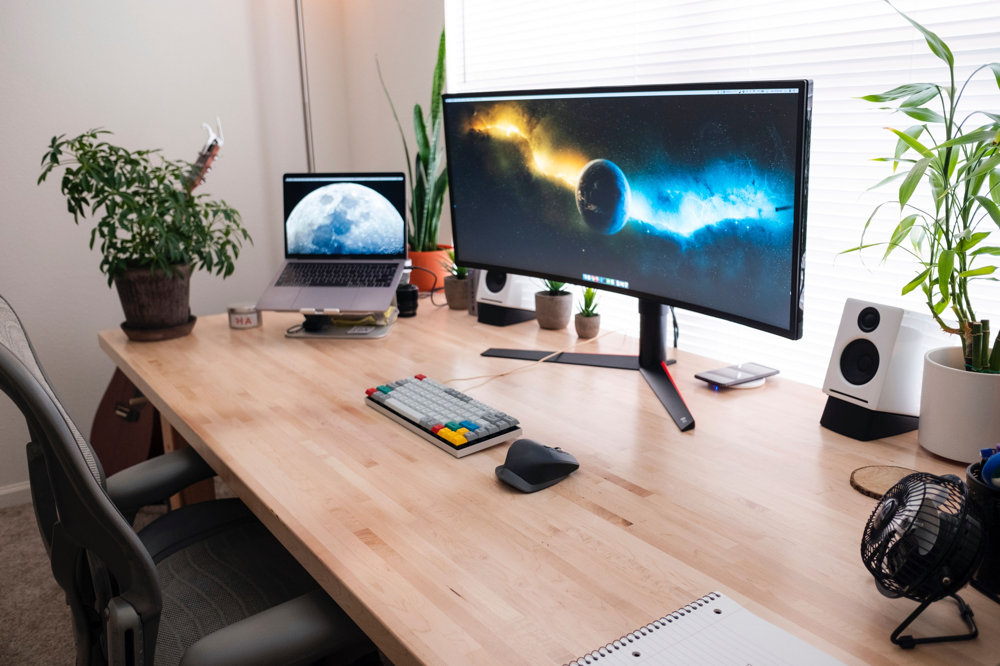

Intro

Hi, I am Abir!
What if passion came in contact with the pen? That’s my daily passion. With a Master’s degree in Language Translation and Communication from Boston University, I’ve not only sharpened my skills for building stories but has also explored deep into world of marketing. Previousely a project lead and demand generation strategist for INK, I’ve orchestrated campaign and strategies that touches hearts. But all this is not enough. As a keyword researcher, SEO consultant, content optimizer, as well as editor, I have been backstage director doing content work with Toyota and Ford Motor. By the way, check out my awesome work.
Together with my status as a certified translator with the ATA, combined with a suite of eCommerce certificates from Google, it’s clear to see why when I’m writing or translating content, the end result is not only compelling but primed for performance. Whether your message is meant for global names such as Blankie UAE, Amani Tea, and Prime Technology Solutions or SaaS businesses across the globe, my experience ensures your message is clear, compelling, and perfectly poised for success.
So, what's next on our list? Whether you need deep researched articles, a sprinkle of SEO magic, meticulous editing, or that special customization to make content truly yours - I've got it covered. From over 200 happy collaborations spanning diverse industries and continents, I'm here to help you craft your story and meet your goals. Eager to jump into this content journey? Let's start creating some great content together.
Work

Abir Ghenaiet: Words and Cultures
I have been very lucky to take my first steps within the world of content creation, translation, and optimization during some of the last few years. My foundation was well laid with a Master’s in Language Translation and Communication from Boston University. The academic background plus the additional certified translator status combined with ATA certification as well as eCommerce certificates obtained through Google put me on a solid base for those professional endeavors.
Content Creation & SEO: From January 2022 to July 2023, I worked with high-profile clients. I created website content, articles, and blogs for diverse customers such as Inkforall.com, Hubforward, Fastclick, and SquaredFinancial. One of my clients wrote this about me: “Abir’s professionalism is truly impressive. Her promptness and attention to detail are exceptional. She always provides amazing quality content that will exceed your expectations."
Research & Data Analysis: In March 2022, I had research projects on diverse topics such as a detailed study on Algeria. Paying attention to precision, I had data analysis projects with firms like NexGenDesign and 361 ventures which asked me to apply my analytical skills.
Editorial & Proofreading: My editorial career took me through HR documents, marketing videos, and even literary novels for clients such as Kevin Digital and Teckler Digital. And here’s a happy client ending with this message from December 2021 “It was our first time to work with Abir and we had a good experience on this hiring. Thanks!”
Diverse Collaborations: My versatility has landed me on top. I have worked with big names like Toyota, Ford Motor, Blankie UAE, Amani Tea among others and have also enjoyed working together with Cactix UAE, D-fly, Alnamaa Group amongst many other pleasant experiences. From Fortune 500 companies to small business and YouTube channels, my work had been done across continents as well as industries.
My career, in reflection, has been a tapestry of different projects, patients, clients and continuous learning. Each feedback – if it is not "Good job!" but an elaborate testimonial – is indeed the testament to the sincerity I put into each project and passion I have for my work. As I look ahead to new collaborations, alas carrying experiences from the past with me, yet carrying enthusiasm for future endeavors.
Let's Collaborate!: If my journey resonates with what you're looking for, I'd love to hear from you. Whether it's a new project, a potential collaboration, or just a chat about the industry, I'm always open to connecting.
Recent Work: For a closer look at my latest endeavors and to get a feel for the quality and diversity of my work, please check out my recent projects here.@Abirghenaiet
Let's create something impactful together!
About

About Abir
In the vast realm of words, narratives, and strategic communication, I've found my calling. I am Abir, a storyteller, linguist, digital alchemist, and a seasoned professional in crafting partnering letters and business proposals.
Top Skills:
- Project Management
- Content Marketing & Ecommerce Webpage Optimization
- Translation
- Communication & SEO
- Business Proposal Writing
- Business Proposal Writing
My journey has been anything but ordinary. From collaborating with Fortune 500 giants like Toyota and Ford Motor to empowering startups and local businesses, my pen has danced across diverse industries and continents. With a certified translator status from the ATA and a suite of eCommerce certificates from Google, I ensure that every word I write or translate isn't just compelling but also optimized for the digital age.
Services Offered:
- SEO-optimized content creation
- Translation across multiple languages
- Crafting tailored business proposals
- Designing partnering letters for collaborations
- Strategic communication consultancy
- Strategic communication consultancy
- Comprehensive project management
But beyond the accolades and achievements, at my core, I am a curious soul. I thrive on challenges, constantly pushing the boundaries of what's possible with words. Whether it's strategizing a brand's voice, drafting a business proposal, or creating a partnering letter for a new venture, I approach every project with passion, precision, and a promise of excellence.
When I'm not weaving words or strategizing business communications, I'm exploring the world, seeking inspiration in its myriad cultures, stories, and landscapes. Because for me, every experience, every interaction, is a story waiting to be told.
So, if you're seeking a partner who brings not just expertise but also a zest for storytelling and strategic communication to the table, let's embark on a narrative journey together. Because with words, we don't just communicate; we connect.
Contact
Projects
Projects Preview
Welcome to our exclusive preview page, tailored for our esteemed clients. Here, you have privileged access to our latest projects, all curated for your review and feedback. Your insights are invaluable to us, and we eagerly await your thoughts on our work in progress. Please note that this page is confidential, and the contents should not be shared outside of this platform. Thank you for your trust and collaboration.
Business Proposal
Partnership Intro Letter
TotoLand Partnership Portfolio by Abir Ghenaiet